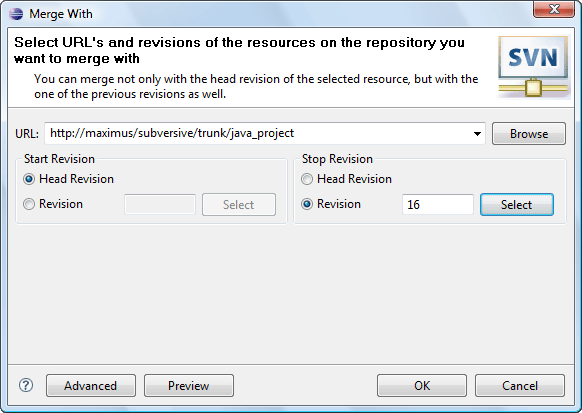

|
|
|
This dialog appears when the user clicks on 'Team>Merge...' menu item in the pop-up menu of the resource linked with the repository location, 'Merge...' menu item of the 'SVN main menu group' or on the 'Merge...' button on the 'SVN Toolbar'. There are Simple and Advanced merge modes. In simple mode the user can merge his local version with some remote one. And in advance mode user can merge his local copy with resources from different URLs. The merge operation in both modes also can be performed with some rage of revisions.
This is how the dialog in the Simple mode looks like:
| Option | Description | Default |
| URL | Specifies the remote resource location | 'blank' |
| Start revision | Specifies the minimum merge range revision number. | Head |
| Stop revision | Specifies the maximum merge range revision number. | Head |
This is how the dialog in the Advance mode looks like:

| Option | Description | Default |
| URL1 | Specifies the first remote resource location | 'blank' |
| URL2 | Specifies the second remote resource location | 'blank' |
| Start revision | Specifies the minimum merge range revision number. | Head |
| Stop revision | Specifies the maximum merge range revision number. | Head |
| Ignore Ancestry | Specifies if Subversion® should ignore the ancestry of resources while merging. | Disabled |
With the 'Preview' button the user can inspect the consequences of the merge operation.